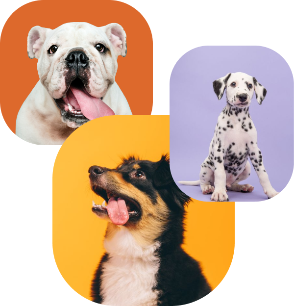

These animals need a family.
Together we can change the world for the better. A world in which every pet has a chance to become a family. If you are ready to fill the ranks with those who care, we are happy to offer you our service.
You know, I’m already in love with you!
Hey, bro! How about a good walk?
We are a charity project. Our goal is to help shelters find new owners for as many animals as possible. The more animals find new families, the more space is freed up for newcomers.
Dog video
One saved life is already a success. The first thing is to stop pretending that the problem does not exist! There is a problem. And it’s scale is large.
We’ve collected a large database of pets from various shelters in Ukraine. With us you need just 5 minutes to find a pet. Just fill out the form and wait.
Each animal that passed through a shelter underwent a full medical examination, passed all the tests and went through a treatment for standard diseases.
They are often hungry, sharing their cages. They look at you with such hopeful eyes. Pets are great. Animals that got into your home from shelters are incredible!
Taking animal from a shelter you save two lives including the one that’ll come to the freed space. You give this saved life a chance to live in love and care. By doing this you become a hero that inspire others.